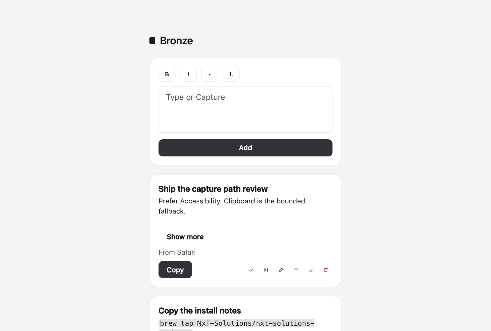
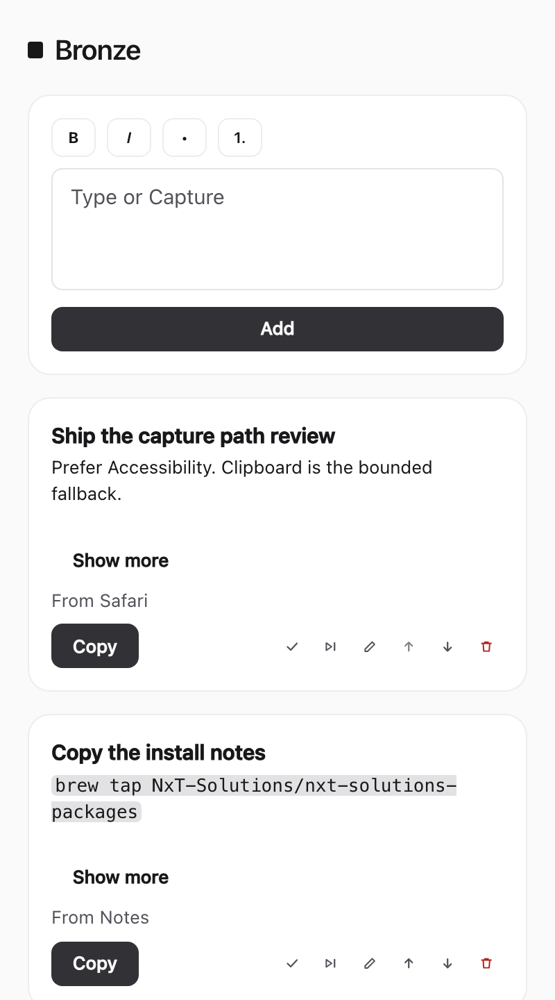
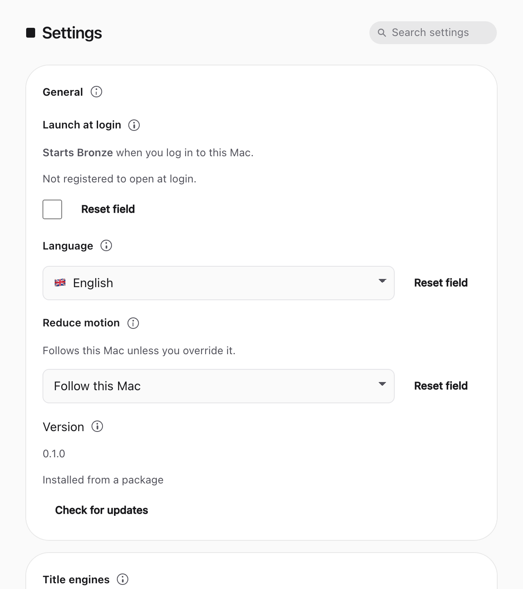

A queue for what you select
Bronze keeps selected text in a local queue so you can act on it without leaving this Mac.
This is only the first time to set up the app.
Preparing the title model

Bronze keeps selected text in a local queue so you can act on it without leaving this Mac.

Select text, then capture from the menu or the shortcut so the selection lands in the queue.
Copy, complete, skip, or edit each item from the inbox when you are ready.

Permission health, shortcuts, and the title engine live in Settings if you need them later.
Bronze asks for Accessibility, Input Monitoring, and Notifications so capture works after this setup.
Needed for the global capture chord
Denied
Use the menu or composer
Needed to read the current selection
Denied
Paste or type into the composer
Needed for Notification Center banners
Unavailable
The in-app notice still appears